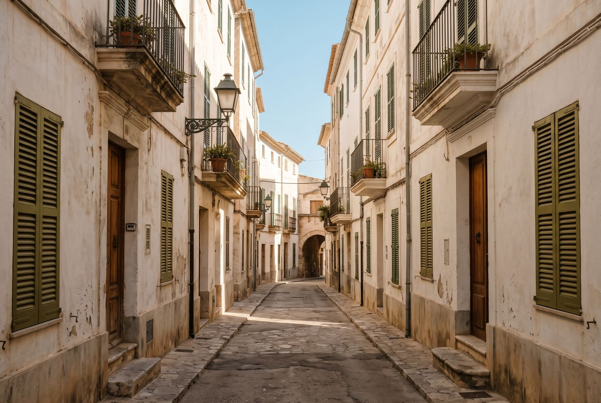
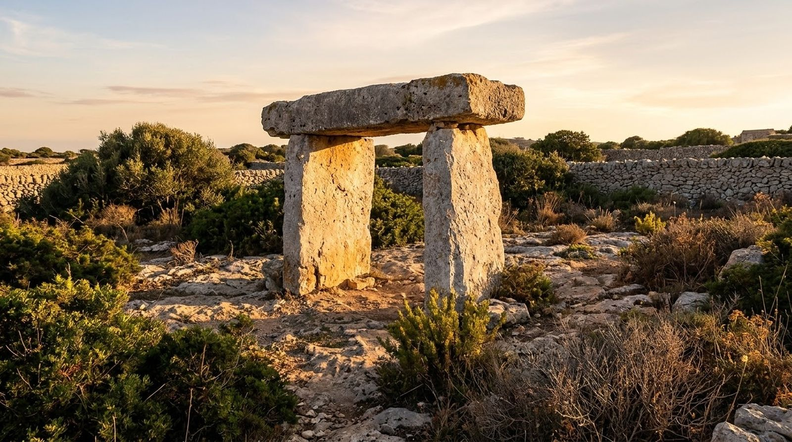

Moodboard: tres direcciones visuales
Antes de diseñar ninguna pantalla, tres maneras distintas de traducir el brief a imágenes, color, tipografía y detalles. El cliente elige una dirección; las otras dos sirven para demostrar que la elegida no es la primera ocurrencia.
- Personalidad del brief
- Editorial, rigurosa, mediterránea y serena.
- Referencias
- Context Travel (rigor, protagonismo del guía) y Hauser & Wirth Menorca (espacio en blanco, tipografía editorial).
- Evitar
- Clichés de agencia de viajes y urgencias sin datos.
Dirección A · Editorial clásico
La interpretación más directa del brief: crema, serif de alto contraste, verde salvia y terracota.
Dirección A
Editorial clásico
Una revista de viajes elegante: calma, buen gusto y luz cálida.
- Elegante
- Cálida
- Serena

Paleta
#F5F0E8 Salvia
#4E5D42 Terracota
#C2785C Arena
#D8C7B0 Grafito
Tipografía
Descubre la historia oculta de la isla.
Experiencias culturales en Menorca guiadas por historiadores, arquitectos y expertos locales.
Playfair Display SemiBold · Inter

Texturas
Detalles gráficos
Iconos de línea en terracota, filetes finos en salvia y titulares con punto final.
Aplicado
Descubre la historia oculta de la isla.
Explora el patrimonio balear en grupos de máximo 8 personas y a un ritmo pausado.
Explorar rutas →Disponibilidad limitada para esta temporada.
Qué transmiteElegancia tranquila, calidez y cuidado.
Por qué se descartaEs la estética «elegante por defecto» que proponen las herramientas de IA. Cambiando el logo serviría para una bodega en la Toscana o un hotel rural en Provenza: no dice nada de quién guía las rutas.
Dirección B · Cuaderno de campo
Nace del negocio, no del destino: los guías son arqueólogos e historiadores, y la identidad toma los recursos de su trabajo.
Dirección B
Cuaderno de campo
La isla vista por quien la investiga: registros, láminas, coordenadas y fichas de catalogación.
- Rigurosa
- Auténtica
- Curiosa
- Serena

Paleta
#F7F4EF Marés
#D8C7B0 Oliva
#4E5D42 Terracota
#C2785C Grafito
Los colores salen de la cal, la piedra de marés, el olivo y el barro; la terracota se reserva para la acción.
Tipografía
02 · Rutas · 39°54′ N 4°07′ E
Menorca se lee en la piedra
Recorre poblados talayóticos y palacios de Ciutadella con una arqueóloga y un historiador del arte que los estudian.
Brygada 1918 · IBM Plex Sans · IBM Plex Mono

Texturas
Detalles gráficos
Ruta nº 01 · Arqueología
- 18:00 hEncuentro y lectura del paisaje
- 19:30 hEl recinto de taula
La taula como marca, registros numerados en mono, láminas con marcas en las esquinas e itinerarios como trazados de un plano.
Aplicado
Ruta nº 01 · Arqueología · Nivel fácil
Ruta talayótica al atardecer
Recorremos Torre d’en Galmés cuando el yacimiento se vacía: las casas prehistóricas, el recinto de taula y la puesta de sol sobre la costa sur.
- Duración
- 3 h
- Grupo
- Máx. 8
- Nivel
- Fácil
- Precio
- 55 €
Qué transmiteRigor, autenticidad y curiosidad: parece hecho por quien conoce la isla a fondo.
Riesgo a vigilarAbusar de la mono y las rejillas puede enfriar la marca. Se equilibra con fotografía cálida, mucho aire y textos cercanos.
Dirección C · Galería mediterránea
Inspirada en la referencia de Hauser & Wirth Menorca: blanco, fotografía protagonista y casi ningún adorno.
Dirección C
Galería mediterránea
La isla como una exposición: grandes imágenes, mucho silencio y tipografía mínima.
- Contemporánea
- Sobria
- Silenciosa
Paleta
#FFFFFF Piedra
#E9E6E1 Mar al anochecer
#2F4A5C Tinta
#141414
El color lo pone la fotografía; la interfaz se queda en blanco y negro con un único acento.
Tipografía
Menorca, despacio.
Rutas culturales en grupos de ocho personas, guiadas por especialistas.
Hanken Grotesk Light y Medium · una sola familia
Texturas
Detalles gráficos
01
Numeraciones grandes y finas, reglas negras de un píxel, enlaces subrayados en lugar de botones y pies de foto mínimos.
Aplicado
02
Ciutadella secreta
Patios señoriales que no abren al público. 2,5 horas · 8 personas · 45 €.
Ver la rutaQué transmiteSofisticación contemporánea, calma, mundo del arte.
RiesgosDepende por completo de una fotografía excelente que aún no existe, y puede leerse como lujo u ostentación, justo lo que el brief quiere evitar. Tiene poca personalidad propia: es la estética de muchas galerías y hoteles boutique.
Comparativa y recomendación
Las tres direcciones cumplen el brief; la diferencia está en cuánto dicen de Menorca Singular y no de cualquier marca de viajes.
| Criterio | A · Editorial clásico | B · Cuaderno de campo | C · Galería mediterránea |
|---|---|---|---|
| De dónde nace | Del destino | Del negocio: quién guía y cómo trabaja | De una referencia estética |
| Personalidad propia | Baja: intercambiable | Alta: solo encaja con esta marca | Media-baja |
| Rigor y autoridad del guía | Media | Alta | Media |
| Dependencia de la fotografía | Media | Media: los recursos gráficos sostienen la página | Muy alta |
| Riesgo de parecer lujo u ostentación | Bajo | Bajo | Alto |
| Interfaz funcional (reserva, panel) | Correcta | Muy natural: datos en rejilla, horarios, coordenadas | Difícil: poca jerarquía visual |
| Veredicto | Descartada | Elegida | Alternativa |
Recomendación: dirección B. Es la única que sale de lo que hace distinto a Menorca Singular, que sus guías investigan aquello que enseñan, y no solo de la isla.
Además resuelve mejor las pantallas funcionales: la ficha de catalogación, el itinerario como trazado y las coordenadas del punto de encuentro son recursos de identidad y, a la vez, información útil para reservar.
Imágenes: marcadores provisionales del proyecto, generados con IA y usados solo como referencia de atmósfera. No muestran lugares concretos con fidelidad; la fotografía definitiva la aporta el cliente. Las texturas están dibujadas con CSS.